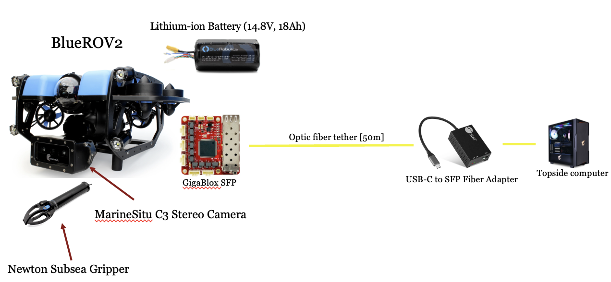
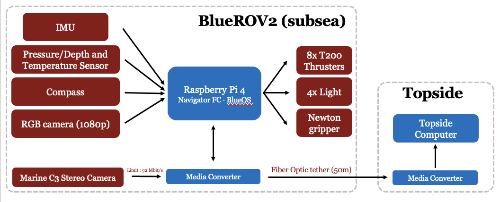

Research
Robust underwater manipulation
A grasping policy trained on land, reading depth instead of RGB. 85% in the pool, under 5% in the ocean at Hopkins. The rebuild adds stereo depth, a state estimator, and MPC with a disturbance observer.
Read the project →Whisker hydrodynamic sensing
A whisker shaped like a harbor seal's vibrissa, reading the wake a fish leaves behind. I built the platform, the signal processing and the field tests; I contribute to it rather than lead it.
Read the project →
PowerBuoy sensor deployment
Oceanographic sensors reach a moored buoy only by hand — winched to the surface, or clamped on by a diver. The question is whether a robot can take that over.
Read the project →The vehicle, assembled from scratch on a lab bench.


Projects outside the publication record.
Competition, coursework, and lab work: a vision stack, a scheduling optimizer, a soft-actuator rig, a piece of civic data analysis, and a fusion study.
Vision lane following for autonomous mobility
A vision-based lane-following stack combining classical image processing with PID control on a 1/10-scale autonomous platform. Second place, HL Mando.
Automated scheduling decision system
A course and exam scheduling optimizer built on graph theory and linear algebra. IIT, 2023.
Dielectric elastomer actuators
An experimental rig sweeping drive frequency, electrode geometry, elastomer composition, and pre-strain across a soft actuator. The sweep produced a peak measured strain of 12.3%. Ajou University, MOST Lab.
TIF economic impact analysis
A quantitative analysis of how Tax Increment Financing has affected median income across Chicago communities. Advised by Dr. Robert Ellis, with Tom Tresser of CivicLab as consulting expert; code and data on GitHub. IIT, 2024.
Multimodal scene classification
Image and audio scene classification: a concatenation model compared against a cross-attention model on the same task, with Grad-CAM maps showing what each one keyed on.